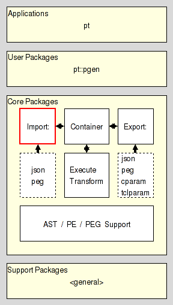

pt_import_api - Parser Tools Import API
Are you lost ? Do you have trouble understanding this document ? In that case please read the overview provided by the Introduction to Parser Tools. This document is the entrypoint to the whole system the current package is a part of.
This document describes two APIs. First the API shared by all packages for the conversion of some other format into Parsing Expression Grammars , and then the API shared by the packages which implement the import plugins sitting on top of the conversion packages.
Its intended audience are people who wish to create their own converter for some type of input, and/or an import plugin for their or some other converter.
It resides in the Import section of the Core Layer of Parser Tools.

Any (grammar) import converter has to follow the rules set out below:
A converter is a package. Its name is arbitrary, however it is recommended to put it under the ::pt::peg::from namespace.
The package provides either a single Tcl command following the API outlined below, or a class command whose instances follow the same API. The commands which follow the API are called converter commands.
A converter command has to provide the following single method with the given signature and semantic. Converter commands are allowed to provide more methods of their own, but not less, and they may not provide different semantics for the standardized method.
This method has to accept some text, a parsing expression grammar in some format. The result of the method has to be the canonical serialization of a parsing expression grammar, as specified in section PEG serialization format, the result of reading and converting the input text.
Any (grammar) import plugin has to follow the rules set out below:
A plugin is a package.
The name of a plugin package has the form pt::peg::import::FOO, where FOO is the name of the format the plugin will accept input for.
The plugin can expect that the package pt::peg::import::plugin is present, as indicator that it was invoked from a genuine plugin manager.
It is recommended that a plugin does check for the presence of this package.
The plugin can expect that a command named IncludeFile is present, with the signature
This command has to be invoked by the plugin when it has to process an included file, if the format has the concept of such.
The plugin has to supply the following arguments
The path of the file it is currently processing. This may be the empty string if no such is known.
The path of the include file as specified in the include directive being processed.
The result of the command will be a 5-element list containing
A boolean flag indicating the success (True) or failure (False) of the operation.
In case of success the contents of the included file, and the empty string otherwise.
The resolved, i.e. absolute path of the included file, if possible, or the unchanged path argument. This is for display in an error message, or as the currentfile argument of another call to IncludeFile should this file contain more files.
In case of success an empty string, and for failure a code indicating the reason for it, one of
The specified file could not be found.
The specified file was found, but not be read into memory.
An empty string in case of success of a notfound failure, and an additional error message describing the reason for a notread error in more detail.
A plugin has to provide a single command, in the global namespace, with the signature shown below. Plugins are allowed to provide more commands of their own, but not less, and they may not provide different semantics for the standardized command.
This command has to accept the a text containing a parsing expression grammar in some format. The result of the command has to be the result of the converter invoked by the plugin for the input grammar, the canonical serialization of the parsing expression grammar contained in the input.
This argument will contain the parsing expression grammar for which to generate the serialization. The specification of what a canonical serialization is can be found in the section PEG serialization format.
A single usage cycle of a plugin consists of an invokation of the command import. This call has to leave the plugin in a state where another usage cycle can be run without problems.
To use a converter do
# Get the converter (single command here, not class)
package require the-converter-package
# Perform the conversion
set serial [theconverter convert $thegrammartext]
... process the result ...
To use a plugin FOO do
# Get an import plugin manager
package require pt::peg::import
pt::peg::import I
# Run the plugin, and the converter inside.
set serial [I import serial $thegrammartext FOO]
... process the result ...
Here we specify the format used by the Parser Tools to serialize Parsing Expression Grammars as immutable values for transport, comparison, etc.
We distinguish between regular and canonical serializations. While a PEG may have more than one regular serialization only exactly one of them will be canonical.
The serialization of any PEG is a nested Tcl dictionary.
This dictionary holds a single key, pt::grammar::peg, and its value. This value holds the contents of the grammar.
The contents of the grammar are a Tcl dictionary holding the set of nonterminal symbols and the starting expression. The relevant keys and their values are
The value is a Tcl dictionary whose keys are the names of the nonterminal symbols known to the grammar.
Each nonterminal symbol may occur only once.
The empty string is not a legal nonterminal symbol.
The value for each symbol is a Tcl dictionary itself. The relevant keys and their values in this dictionary are
The value is the serialization of the parsing expression describing the symbols sentennial structure, as specified in the section PE serialization format.
The value can be one of three values specifying how a parser should handle the semantic value produced by the symbol.
The semantic value of the nonterminal symbol is an abstract syntax tree consisting of a single node node for the nonterminal itself, which has the ASTs of the symbol's right hand side as its children.
The semantic value of the nonterminal symbol is an abstract syntax tree consisting of a single node node for the nonterminal, without any children. Any ASTs generated by the symbol's right hand side are discarded.
The nonterminal has no semantic value. Any ASTs generated by the symbol's right hand side are discarded (as well).
The value is the serialization of the start parsing expression of the grammar, as specified in the section PE serialization format.
The terminal symbols of the grammar are specified implicitly as the set of all terminal symbols used in the start expression and on the RHS of the grammar rules.
The canonical serialization of a grammar has the format as specified in the previous item, and then additionally satisfies the constraints below, which make it unique among all the possible serializations of this grammar.
The keys found in all the nested Tcl dictionaries are sorted in ascending dictionary order, as generated by Tcl's builtin command lsort -increasing -dict.
The string representation of the value is the canonical representation of a Tcl dictionary. I.e. it does not contain superfluous whitespace.
Assuming the following PEG for simple mathematical expressions
PEG calculator (Expression)
Digit <- '0'/'1'/'2'/'3'/'4'/'5'/'6'/'7'/'8'/'9' ;
Sign <- '-' / '+' ;
Number <- Sign? Digit+ ;
Expression <- Term (AddOp Term)* ;
MulOp <- '*' / '/' ;
Term <- Factor (MulOp Factor)* ;
AddOp <- '+'/'-' ;
Factor <- '(' Expression ')' / Number ;
END;
then its canonical serialization (except for whitespace) is
pt::grammar::peg {
rules {
AddOp {is {/ {t -} {t +}} mode value}
Digit {is {/ {t 0} {t 1} {t 2} {t 3} {t 4} {t 5} {t 6} {t 7} {t 8} {t 9}} mode value}
Expression {is {x {n Term} {* {x {n AddOp} {n Term}}}} mode value}
Factor {is {/ {x {t (} {n Expression} {t )}} {n Number}} mode value}
MulOp {is {/ {t *} {t /}} mode value}
Number {is {x {? {n Sign}} {+ {n Digit}}} mode value}
Sign {is {/ {t -} {t +}} mode value}
Term {is {x {n Factor} {* {x {n MulOp} {n Factor}}}} mode value}
}
start {n Expression}
}
Here we specify the format used by the Parser Tools to serialize Parsing Expressions as immutable values for transport, comparison, etc.
We distinguish between regular and canonical serializations. While a parsing expression may have more than one regular serialization only exactly one of them will be canonical.
The string epsilon is an atomic parsing expression. It matches the empty string.
The string dot is an atomic parsing expression. It matches any character.
The string alnum is an atomic parsing expression. It matches any Unicode alphabet or digit character. This is a custom extension of PEs based on Tcl's builtin command string is.
The string alpha is an atomic parsing expression. It matches any Unicode alphabet character. This is a custom extension of PEs based on Tcl's builtin command string is.
The string ascii is an atomic parsing expression. It matches any Unicode character below U0080. This is a custom extension of PEs based on Tcl's builtin command string is.
The string control is an atomic parsing expression. It matches any Unicode control character. This is a custom extension of PEs based on Tcl's builtin command string is.
The string digit is an atomic parsing expression. It matches any Unicode digit character. Note that this includes characters outside of the [0..9] range. This is a custom extension of PEs based on Tcl's builtin command string is.
The string graph is an atomic parsing expression. It matches any Unicode printing character, except for space. This is a custom extension of PEs based on Tcl's builtin command string is.
The string lower is an atomic parsing expression. It matches any Unicode lower-case alphabet character. This is a custom extension of PEs based on Tcl's builtin command string is.
The string print is an atomic parsing expression. It matches any Unicode printing character, including space. This is a custom extension of PEs based on Tcl's builtin command string is.
The string punct is an atomic parsing expression. It matches any Unicode punctuation character. This is a custom extension of PEs based on Tcl's builtin command string is.
The string space is an atomic parsing expression. It matches any Unicode space character. This is a custom extension of PEs based on Tcl's builtin command string is.
The string upper is an atomic parsing expression. It matches any Unicode upper-case alphabet character. This is a custom extension of PEs based on Tcl's builtin command string is.
The string wordchar is an atomic parsing expression. It matches any Unicode word character. This is any alphanumeric character (see alnum), and any connector punctuation characters (e.g. underscore). This is a custom extension of PEs based on Tcl's builtin command string is.
The string xdigit is an atomic parsing expression. It matches any hexadecimal digit character. This is a custom extension of PEs based on Tcl's builtin command string is.
The string ddigit is an atomic parsing expression. It matches any decimal digit character. This is a custom extension of PEs based on Tcl's builtin command regexp.
The expression [list t x] is an atomic parsing expression. It matches the terminal string x.
The expression [list n A] is an atomic parsing expression. It matches the nonterminal A.
For parsing expressions e1, e2, ... the result of [list / e1 e2 ... ] is a parsing expression as well. This is the ordered choice, aka prioritized choice.
For parsing expressions e1, e2, ... the result of [list x e1 e2 ... ] is a parsing expression as well. This is the sequence.
For a parsing expression e the result of [list * e] is a parsing expression as well. This is the kleene closure, describing zero or more repetitions.
For a parsing expression e the result of [list + e] is a parsing expression as well. This is the positive kleene closure, describing one or more repetitions.
For a parsing expression e the result of [list & e] is a parsing expression as well. This is the and lookahead predicate.
For a parsing expression e the result of [list ! e] is a parsing expression as well. This is the not lookahead predicate.
For a parsing expression e the result of [list ? e] is a parsing expression as well. This is the optional input.
The canonical serialization of a parsing expression has the format as specified in the previous item, and then additionally satisfies the constraints below, which make it unique among all the possible serializations of this parsing expression.
The string representation of the value is the canonical representation of a pure Tcl list. I.e. it does not contain superfluous whitespace.
Terminals are not encoded as ranges (where start and end of the range are identical).
Assuming the parsing expression shown on the right-hand side of the rule
Expression <- Term (AddOp Term)*
then its canonical serialization (except for whitespace) is
{x {n Term} {* {x {n AddOp} {n Term}}}}
This document, and the package it describes, will undoubtedly contain bugs and other problems. Please report such in the category pt of the Tcllib Trackers. Please also report any ideas for enhancements you may have for either package and/or documentation.
EBNF, LL(k), PEG, TDPL, context-free languages, expression, grammar, matching, parser, parsing expression, parsing expression grammar, push down automaton, recursive descent, state, top-down parsing languages, transducer
Parsing and Grammars
Copyright © 2009 Andreas Kupries <andreas_kupries@users.sourceforge.net>